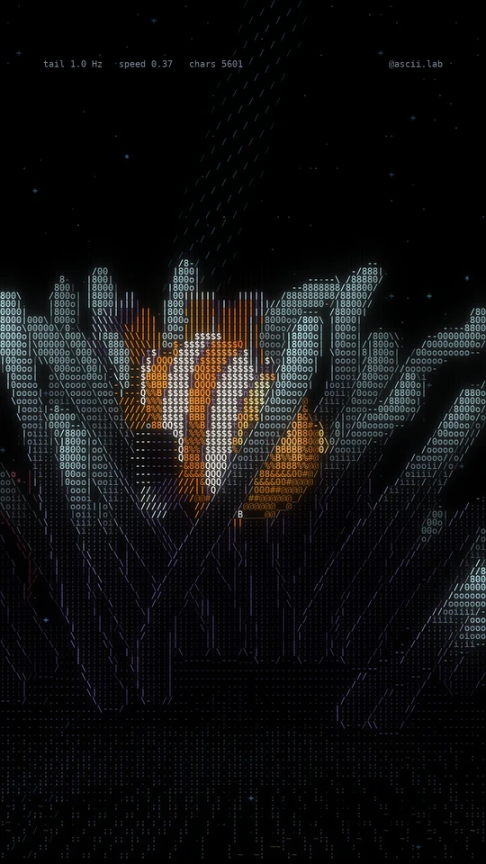

About the Project
A self-contained Python marine simulation combining parametric 3D body deformation, fluid dynamics, and terminal ASCII rasterization.
🐟 Parametric Anatomy
Realistic spine undulation, pectoral rowing kinematics, and caudal fin arc-length preservation.
🪸 Dynamic Anemone
Multi-link Verlet integration, soft body repulsive collisions, and touch-induced bioluminescence.
⚡ Terminal Streaming
Live real-time 60/10 FPS animation playback with 24-bit ANSI TrueColor in your terminal.